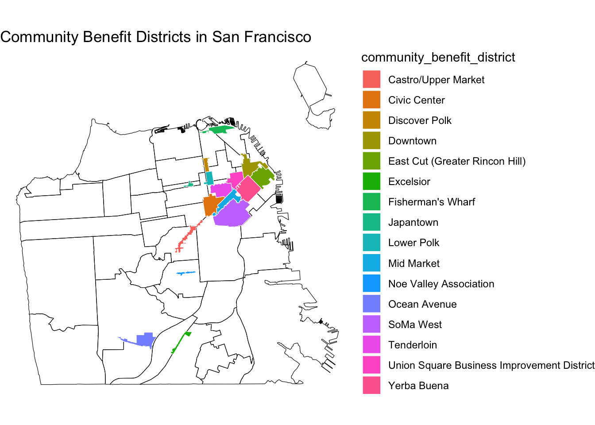
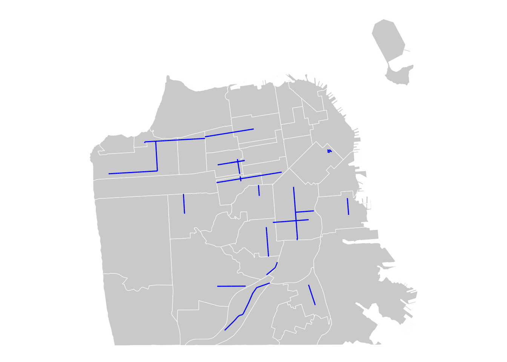

Chapter 4 Accounting for Regulations
So far, we have explored various ways to map the distribution of restaurants in San Francisco. Studies have consistently found that restaurants, and other organizational resources like police stations, schools, childcare centers, banks, and parks, are unevenly distributed across neighborhoods by race and class in the US. Surely, race and class are important determinants of the distribution of resources. For example, white and more affluent neighborhoods have more private childcare centers, traditional financial services, “high-end” restaurants while racial minority and poorer neighborhoods have more public childcare centers, alternative financial services, and “unhealthy” restaurants. We can explore these relationships using the aggregated demographic data merged with the POI data, which we’ve discussed so far.
However, the distribution of organizational resources, and more broadly, the built environment is heavily shaped by regulations. Particularly, local zoning laws have tremendous impact on what gets or doesn’t get built in the neighborhood.
In the following, we will discuss how “community benefit districts (CBDs)”, also known as “business improvement districts (BIDs), may have a spatial relationship with the distribution of restaurants in San Francisco. In San Francisco, CBDs are designated based on a private-public partnership to fund improvements and get customized support for commercial and mixed-use corridors in select neighborhoods.
# Import the cbds data
sfzone <- st_read("data/bid-cbd.geojson") %>%
dplyr::select(community_benefit_district, contract_duration, established, geometry)## Reading layer `bid-cbd' from data source
## `/Users/hesuyoon/Documents/ENSAE-CREST/2024/2 Fall/Teaching/Advanced_Method/soc-gis-tutorial/data/bid-cbd.geojson'
## using driver `GeoJSON'
## Simple feature collection with 16 features and 12 fields
## Geometry type: MULTIPOLYGON
## Dimension: XY
## Bounding box: xmin: -122.4653 ymin: 37.71984 xmax: -122.3881 ymax: 37.80862
## Geodetic CRS: WGS 84head(sfzone, 3)## Simple feature collection with 3 features and 3 fields
## Geometry type: MULTIPOLYGON
## Dimension: XY
## Bounding box: xmin: -122.4653 ymin: 37.71984 xmax: -122.3997 ymax: 37.78026
## Geodetic CRS: WGS 84
## community_benefit_district contract_duration established
## 1 SoMa West 15 years 2019
## 2 Excelsior 10 years 2023
## 3 Ocean Avenue 15 years 2010
## geometry
## 1 MULTIPOLYGON (((-122.4178 3...
## 2 MULTIPOLYGON (((-122.4385 3...
## 3 MULTIPOLYGON (((-122.4653 3...# Check the boundaries
ggplot() +
geom_sf(data = sfnh, fill = NA, color = "black", size = 0.2) +
geom_sf(data = sfzone,
aes(fill = community_benefit_district),
color = "white", size = 0.02) +
theme_void() +
labs(title = "Community Benefit Districts in San Francisco")
Recollect how restaurants were distributed in San Francisco. We can, for instance, ask if a neighborhood is within or close to BIDs, they are likely to have more businesses. If this was the case, such a spatial proximity could be an important factor in estimating the relationship between a neighborhood and the number of businesses. Below, we will how to create a spatial variable at the neighborhood-level, indicating 1) whether the neighborhood intersects with BIDs (binary), as well as 2) its nearest or average distance to BIDs (continuous).
4.1 Spatial relationships
First, let’s determine whether a neighborhood boundary intersects with BIDs. We can use st_intersects function to create a list of neighborhoods and its intersecting BIDs.
# Find out if neighborhoods intersect with any BIDs
intersections <- st_intersects(biz_colors, sfzone)
print(intersections)## Sparse geometry binary predicate list of length 41, where the predicate
## was `intersects'
## first 10 elements:
## 1: 12, 13, 15
## 2: 3
## 3: (empty)
## 4: (empty)
## 5: 1, 6, 9, 11, 13, 14
## 6: (empty)
## 7: (empty)
## 8: (empty)
## 9: (empty)
## 10: (empty)# Create a new binary variable indicating whether a neighborhood intersects with any BIDs
biz_colors$intersects_cbd <- sapply(intersections,
function(x) ifelse(length(x) > 0, 1, 0))
head(biz_colors, 3)## Simple feature collection with 3 features and 3 fields
## Geometry type: MULTIPOLYGON
## Dimension: XY
## Bounding box: xmin: -122.4761 ymin: 37.70833 xmax: -122.3983 ymax: 37.79037
## Geodetic CRS: WGS 84
## nhood n_rst geometry intersects_cbd
## 1 Western Addition 45 MULTIPOLYGON (((-122.4214 3... 1
## 2 West of Twin Peaks 74 MULTIPOLYGON (((-122.461 37... 1
## 3 Visitacion Valley 6 MULTIPOLYGON (((-122.4039 3... 0Here, we can see that a new “intersects_cbd” column was created and added to the sf object, biz_colors. With this neighborhood-level data, you could run a bivariate regression model estimating the relationship between the number of businesses and being in BIDs.
# Assuming you have the number of businesses in a column `num_businesses`
model <- lm(n_rst ~ intersects_cbd, data = biz_colors)
# View the summary of the model
summary(model)##
## Call:
## lm(formula = n_rst ~ intersects_cbd, data = biz_colors)
##
## Residuals:
## Min 1Q Median 3Q Max
## -87.32 -39.77 -19.32 30.23 223.68
##
## Coefficients:
## Estimate Std. Error t value Pr(>|t|)
## (Intercept) 39.77 14.41 2.761 0.00874 **
## intersects_cbd 65.54 21.16 3.097 0.00361 **
## ---
## Signif. codes: 0 '***' 0.001 '**' 0.01 '*' 0.05 '.' 0.1 ' ' 1
##
## Residual standard error: 67.57 on 39 degrees of freedom
## Multiple R-squared: 0.1974, Adjusted R-squared: 0.1768
## F-statistic: 9.594 on 1 and 39 DF, p-value: 0.00361This simple analysis demonstrates that neighborhoods that intersect BIDs, on average, indeed have 65.54 more businesses compared to neighborhoods that do not intersect with BIDs. Such a spatial variable can be included as a main predictor or as a control variable depending on your research question.
The second solution requires calculating distance. What is the nearest or average distance to BIDs for a given neighborhood? We use the centroids of polygons for distance calculations.
# Create centroids for both neighborhood polygons and community benefit district polygons
nh_centroids <- st_centroid(sfnh)
bids_centroids <- st_centroid(sfzone)# Compute pairwise distances (matrix form)
distances <- st_distance(nh_centroids, bids_centroids)
# Convert to a data frame for easier manipulation
distance_df <- as.data.frame(as.matrix(distances))
head(distance_df, 3)## V1 V2 V3 V4 V5 V6
## 1 2113.160 [m] 6330.618 [m] 6579.378 [m] 3389.777 [m] 1824.279 [m] 2582.332 [m]
## 2 6240.084 [m] 2536.732 [m] 1253.155 [m] 3041.710 [m] 4212.930 [m] 7469.365 [m]
## 3 6801.452 [m] 2506.258 [m] 4016.806 [m] 4695.895 [m] 6128.807 [m] 7928.812 [m]
## V7 V8 V9 V10 V11
## 1 3287.795 [m] 2949.494 [m] 2134.726 [m] 3076.620 [m] 1737.384 [m]
## 2 8281.413 [m] 8283.973 [m] 7432.754 [m] 8868.106 [m] 6514.740 [m]
## 3 8527.637 [m] 8917.746 [m] 8312.261 [m] 10461.030 [m] 7383.877 [m]
## V12 V13 V14 V15 V16
## 1 414.8295 [m] 1096.984 [m] 1442.067 [m] 1130.678 [m] 1497.141 [m]
## 2 6181.4583 [m] 5951.285 [m] 6710.372 [m] 6815.890 [m] 7285.227 [m]
## 3 8271.5464 [m] 7276.509 [m] 7873.987 [m] 8384.073 [m] 9011.337 [m]# Add meaningful column and row names
colnames(distance_df) <- sfzone$community_benefit_district
rownames(distance_df) <- sfnh$nhood
head(distance_df, 3)## SoMa West Excelsior Ocean Avenue
## Western Addition 2113.160 [m] 6330.618 [m] 6579.378 [m]
## West of Twin Peaks 6240.084 [m] 2536.732 [m] 1253.155 [m]
## Visitacion Valley 6801.452 [m] 2506.258 [m] 4016.806 [m]
## Noe Valley Association Castro/Upper Market Yerba Buena
## Western Addition 3389.777 [m] 1824.279 [m] 2582.332 [m]
## West of Twin Peaks 3041.710 [m] 4212.930 [m] 7469.365 [m]
## Visitacion Valley 4695.895 [m] 6128.807 [m] 7928.812 [m]
## East Cut (Greater Rincon Hill) Downtown
## Western Addition 3287.795 [m] 2949.494 [m]
## West of Twin Peaks 8281.413 [m] 8283.973 [m]
## Visitacion Valley 8527.637 [m] 8917.746 [m]
## Union Square Business Improvement District Fisherman's Wharf
## Western Addition 2134.726 [m] 3076.620 [m]
## West of Twin Peaks 7432.754 [m] 8868.106 [m]
## Visitacion Valley 8312.261 [m] 10461.030 [m]
## Mid Market Japantown Civic Center Tenderloin
## Western Addition 1737.384 [m] 414.8295 [m] 1096.984 [m] 1442.067 [m]
## West of Twin Peaks 6514.740 [m] 6181.4583 [m] 5951.285 [m] 6710.372 [m]
## Visitacion Valley 7383.877 [m] 8271.5464 [m] 7276.509 [m] 7873.987 [m]
## Lower Polk Discover Polk
## Western Addition 1130.678 [m] 1497.141 [m]
## West of Twin Peaks 6815.890 [m] 7285.227 [m]
## Visitacion Valley 8384.073 [m] 9011.337 [m]# Reshape to a long-format for analysis
distance_long <- distance_df %>%
rownames_to_column("Neighborhood") %>%
pivot_longer(
cols = -Neighborhood,
names_to = "BID",
values_to = "Distance"
)
head(distance_long, 10)## # A tibble: 10 × 3
## Neighborhood BID Distance
## <chr> <chr> [m]
## 1 Western Addition SoMa West 2113.
## 2 Western Addition Excelsior 6331.
## 3 Western Addition Ocean Avenue 6579.
## 4 Western Addition Noe Valley Association 3390.
## 5 Western Addition Castro/Upper Market 1824.
## 6 Western Addition Yerba Buena 2582.
## 7 Western Addition East Cut (Greater Rincon Hill) 3288.
## 8 Western Addition Downtown 2949.
## 9 Western Addition Union Square Business Improvement District 2135.
## 10 Western Addition Fisherman's Wharf 3077.# Identify nearest distance
nearest_bid <- distance_long %>%
group_by(Neighborhood) %>%
slice_min(order_by = Distance)
head(nearest_bid, 10)## # A tibble: 10 × 3
## # Groups: Neighborhood [10]
## Neighborhood BID Distance
## <chr> <chr> [m]
## 1 Bayview Hunters Point Excelsior 4284.
## 2 Bernal Heights Noe Valley Association 1890.
## 3 Castro/Upper Market Castro/Upper Market 502.
## 4 Chinatown Downtown 733.
## 5 Excelsior Excelsior 741.
## 6 Financial District/South Beach East Cut (Greater Rincon Hill) 329.
## 7 Glen Park Noe Valley Association 1361.
## 8 Golden Gate Park Castro/Upper Market 4487.
## 9 Haight Ashbury Castro/Upper Market 1221.
## 10 Hayes Valley Civic Center 934.This type of distance data can be used for network analysis to study urban connectivity, accessibility, and so forth. In network terms, a Neighborhood is ego, and a BID is alter. Distance is edge, connecting ego and alter. Network analysis is beyond the scope of this tutorial, but remember, handling spatial data is a powerful tool that will enable you to conduct advanced statistical analysis.
We can simply add the nearest distance to the existing neighborhood-level data using the following function.
# Calculate the minimum distance for each neighborhood
biz_colors$min_distance_to_bid <- apply(distances, 1, min) # 'mean' for average distance
head(biz_colors, 3)## Simple feature collection with 3 features and 4 fields
## Geometry type: MULTIPOLYGON
## Dimension: XY
## Bounding box: xmin: -122.4761 ymin: 37.70833 xmax: -122.3983 ymax: 37.79037
## Geodetic CRS: WGS 84
## nhood n_rst geometry intersects_cbd
## 1 Western Addition 45 MULTIPOLYGON (((-122.4214 3... 1
## 2 West of Twin Peaks 74 MULTIPOLYGON (((-122.461 37... 1
## 3 Visitacion Valley 6 MULTIPOLYGON (((-122.4039 3... 0
## min_distance_to_bid
## 1 414.8295
## 2 1253.1553
## 3 2506.2580Now, you have a neighborhood-level data with the number of restaurants (n_rst) as an outcome variable, and two spatial predictors - intersects_cbd and min_distance_to_bid. You can always merge additional predictors, such as aggregated demographic variables, which we covered in the beginning of the tutorial.
THINK AND SHARE
What other regulations, including but not limited to zoning, can you think of that have meaningful impact on spatial organization of people and the built environment? For example, scholars have examined the relationship between historic districts and gentrification (McCabe and Ellen, 2016) and the impact of BIDs on property values (Ellen et al, 2007). What are their research questions? How did these authors build and analyze their data? What are the key findings?
LINES
Remember three different forms of vector data? We have discussed polygons, points.. and what’s left? Lines. Lines are useful when you are interested in exploring and visualizing transportation networks, mobility patterns, connectivity, and so forth. We won’t cover much details about the line formatted data, but will provide a short example of mapping lines.
During COVID, San Francisco city government launched the Slow Street Program to help maintain social distance requirements for users on the streets. Slow Streets utilize temporary tools like cones and signage to divert traffic and remind vehicles to maintain a safe speed to accommodate for pedestrians and bicyclists who may be traveling to make essential trips. After COVID, this program continued as part of a connected, citywide Active Transportation Network, designed to eliminate deaths and severe injuries related to transportation, and encourage more people to choose low-carbon ways to travel for their daily trips.
# Import slow street data (lines)
slowst <- st_read("data/slow-st.geojson")## Reading layer `slow-st' from data source
## `/Users/hesuyoon/Documents/ENSAE-CREST/2024/2 Fall/Teaching/Advanced_Method/soc-gis-tutorial/data/slow-st.geojson'
## using driver `GeoJSON'
## Simple feature collection with 240 features and 22 fields
## Geometry type: LINESTRING
## Dimension: XY
## Bounding box: xmin: -122.5056 ymin: 37.71392 xmax: -122.3902 ymax: 37.7905
## Geodetic CRS: WGS 84ggplot() +
geom_sf(data = sfnh, fill = "lightgrey", color = "white", size = 0.2) +
geom_sf(data = slowst,
color = "blue",
size = 50,
linetype = "solid") + # options: dashed, dotted, etc
theme_void()
Source: SFMTA (Accessed 2024)
THINK AND SHARE
- What kind of research questions can you ask about BIDs?
- What kind of research questions can you ask about slow streets?
Discuss the potential predictors (x) or outcomes (y).